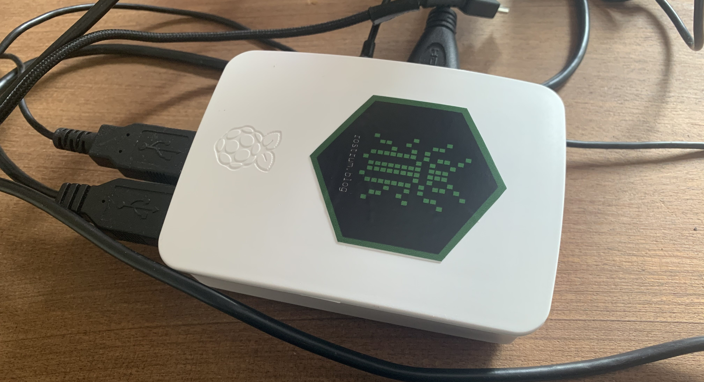
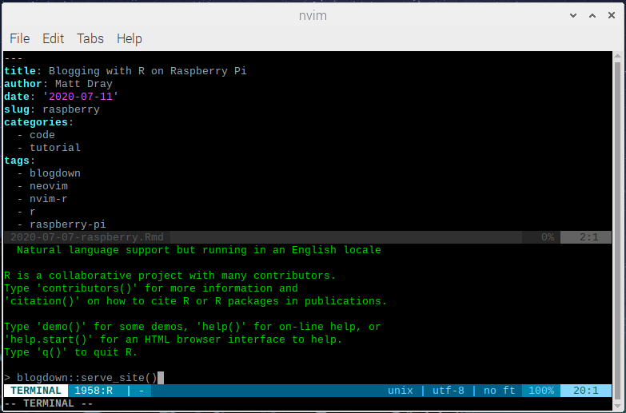

install.packages(c("httpuv", "blogdown"))
tl;dr
I installed R on a Raspberry Pi and set it up to use {blogdown}. This post was written from my Pi.
Note
Since I wrote this post it’s become much easier to get started with R on the Raspberry Pi with r4pi.org by Mark Sellors, along with VS Code. Read on for a more terminal-based experience.
A delicious Raspberry Pi
The hardware
The Raspberry Pi is a small, inexpensive, single-board computer designed to make computing and coding accessible to all. It’s also popular in the maker community given its support for various peripherals like cameras and sensors.
The Pi was first released in 2012 and is now in its fourth generation of hardware. I was gifted a Pi 2 Model B in 2015 and have used it intermittently as a secondary computer and a video game emulation machine.
I decided to pull my Pi out of retirement to explore how well it could run R, and more specifically, be used as a machine for blogging.
Raspberry Pi OS
The Raspberry Pi is capable of running a large number of operating systems. The go-to is Raspberry Pi OS (formerly Raspbian), built on the open-source Debian Linux distribution.
You need to install the OS onto a micro-SD card1 via a second computer and then insert it into your Pi. Installing the Raspberry Pi Imager to your second computer will help you format (clean) the card and install the OS. At the time of writing, this was the May 2020 release.
There’s a full walkthrough for setting up your machine on the Raspberry Pi website.
Installing software
With the Pi set up, we can get on with installing the software we need to get blogging. Things may change over time, but the sections below describe what worked at time of writing. I’ve added software version numbers below for posterity.
You can click to jump to each section:
In each case, we’ll be running commands from the Terminal to install what we need.2
Before installing things, it’s a good idea to run the update command so that the latest package versions are installed
sudo apt-get update1. Install R and an IDE
It’s not too tricky to get hold of R, but what coding environment can we use?
I typically use the RStudio integrated development environment (IDE), but it isn’t available on this platform3. You could just run R from the Terminal, but it’s tedious to work entirely from the command line or copy-paste commands to it from a text editor.
This is where Nvim-R comes in. It turns your Terminal into an IDE.4
1a. Install R
R can be installed from the command line with:
sudo apt-get install r-base r-base-core r-base-devThis grabs the latest R version that’s available for the platform, which is 3.5. At time of writing, version 4.0 has been released on other platforms, so we’ll miss out on the latest advancements like stringsAsFactors=FALSE by default, sadly.
1b. Install Neovim
A prerequisite for Nvim-R is either Vim or Neovim. Nvim-R is a plugin for these tools.
But what are they, actually? Vim is a powerful text editor for the command line and Neovim is effectively a more extensible version of it.
I’ve been using Neovim, which can be installed with:
sudo apt install neovimAt time of writing, this installs version 0.3.4. You can enter Neovim by opening a terminal and running nvim. This puts you into a text editor interface.
1c. Install Nvim-R

There are a whole bunch of plugins available for Neovim to help extend it. You can see these at the VimAwesome site.
Nvim-R by Jakson Alves de Aquino is one such plugin.
At the simplest level, Nvim-R turns your terminal into an R IDE by allowing for a concurrent script editor and console (along with many other features). This means you can write R code and send it to the console without having to copy-paste or write directly into the console. This is analagous to something like RStudio without the point-and-click features.
vim-plug and Nvim-R
We can install a plugin manager to help install and manage Nvim-R and other Neovim extensions: vim-plug by Junegunn Choi.
Having installed Neovim, you can get vim-plug by running this via Terminal:
sh -c 'curl -fLo "${XDG_DATA_HOME:-$HOME/.local/share}"/nvim/site/autoload/plug.vim --create-dirs \
https://raw.githubusercontent.com/junegunn/vim-plug/master/plug.vim'You specify your plugins in a special init.vim file. Run the following line to create the file and open it in Neovim in the Terminal so you can begin editing:
nvim ~/.config/nvim/init.vimYou can then toggle into Neovim’s ‘insert’ mode (press i) and paste (ctrl + shift + V) this in:
" Specify a directory for plugins
" - Avoid using standard Vim directory names like 'plugin'
call plug#begin('~/.vim/plugged')
" List of plugins.
" Make sure you use single quotes
" Shorthand notation
Plug 'jalvesaq/Nvim-R', {'branch': 'stable'}
" Initialize plugin system
call plug#end()Where Plug 'jalvesaq/Nvim-R' is the part where the Nvim-R plugin is specified.
This is a super minimal init.vim example. You can add a whole bunch of other plugins to this list that will allow for things like code autocompletion and themes. You can also add lines to this file to modify various settings within Neovim.
Enter ‘normal’ mode (press Esc) and then type the following and hit Enter:
:PluginInstallThis triggers the installation of the plugins you specified in the init.vim file. For me, this installed the latest Nvim-R version, 0.9.14.
I found a YouTube video and a GitHub gist by Rohit Farmer really useful for doing these steps. Rohit provides some good examples of additional plugins that will improve your experience of Nvim-R.
Using Nvim-R
A full run-through of how to use Neovim and Nvim-R are out of scope for this post, but it’s worth a quick aside here.
To open an .R or .Rmd script for editing in Nvim-R, you can:
- type
nvimand the path to your file, likenvim ~/path/to/file.R, from a Terminal - right-click the file in the explorer and select ‘Nvim-R’, which will open that file in Nvim-R in a Terminal window
The important thing to know is that Neovim and Nvim-R are keyboard-driven; there’s no pointing-and-clicking like in RStudio. You’ll need to remember a bunch of non-obvious key presses to get around, although these are all configurable.
See Neovim’s docs for its key bindings (i.e. key presses that result in something happening), but here’s some useful ones:
- i to enter ‘insert’ mode and begin typing text
- Esc to exit insert mode and enter ‘normal’ mode
- :w and Enter to write (save)
- :q and Enter to quit (the most searched-for command in history?) or :q! to quit without saving
- :wq and Enter to save and quit
- ^W and one of l, k, j or h to move focus around the ‘panes’ (e.g. script to console)
As for Nvim-R, see Section 4 of the docs for a full set of key bindings. Here’s some important default ones:
- \rf opens a console
- \l sends the current line to the console
- \cc to send the current R Markdown chunk
- \ro to open and close the object browser
2. Install blogging requirements
Now we’ve got everything we need to use R on the Raspberry Pi. My use case involves blogging, so now to install the requirements for that.
2a. Install {blogdown}
I used Yihui Xie’s {blogdown} package to build this blog and post to it.
You can install the package (currently v0.20) from CRAN. I found that I had to install {httpuv} separately first to prevent errors.
You can run this from Nvim-R or you can run R to start R from a Terminal window.
Of course, you can go ahead and install any other packages you might need to write your posts.
But we also need two further things that aren’t R packages: Pandoc and Hugo.
2b. Install Pandoc
{blogdown} is based on turning R Markdown files into HTML files to be served as a website. A crucial element of this conversion process is a document converter called Pandoc. It can be installed via the Terminal with:
sudo apt-get install pandocThis installed version 2.2.1 at time of writing.
2c. Install Hugo
Hugo is a static-site generator that builds your posts into a website, like the one you’re looking at now.
You can install Hugo from within R with blogdown::install_hugo(), but this failed for me because it tries to install a 64-bit version and Raspberry Pi OS is 32-bit.
Instead, I used snapcraft, which describes itself as ‘the app store for Linux’. It bundles up everything you need for a given installation, including dependencies. This is great for a noob like me.
To enable the installation of ‘snaps’, you first need to run:
sudo apt install snapdAfter a reboot, install the Hugo snap:
sudo snap install hugoThis installed version 0.73.0 for me at time of writing.
A blogging workflow
So now we have everything installed, what’s the workflow for blogging?
Setting up a blog is out of scope for this post, but you can find instructions for this in the blogdown companion book by Yihui Xie, Amber Thomas and Alison Presmanes Hill.
The flow could be something like:
- Create a new
YYYY-MM-DD-post-name.Rmdfile for the post incontent/post/ - Open this file with Neovim-R and begin writing, including the YAML metadata and R Markdown chunks as usual (remembering that you can send R Markdown chunks to the console with the
\\ccdefault key binding) - Use
blogdown::serve_site()from the console to render the site and serve it locally (it’ll open in your browser) - Commit and push your changes to GitHub as normal (Git is preinstalled with Raspberry Pi OS5)
For images or other files you wan to embed in your post, create static/post/YYYY-MM-DD-post-name_files and refer to it from your post in the form /post/2020-07-07-post-name_files/image.jpg.
Typically I would use the {blogdown} RStudio addin to help set up the YAML and put the files in the right place, but it isn’t a big deal to do this ‘manually’.
This approach works for me: you’re currently looking at a post made from my Raspberry Pi!
Blow a raspberry
I set up my Pi before thinking about writing a post about it, so I may have missed or misremembered a step here or there. Let me know if I’ve made an obvious error or if you run into problems if you’re following along.
Bear in mind that I have very little experience of Linux and Vim, but eager to learn. I’d also be grateful for any useful plugins or anything else you’d like to share.
Ultimately I’ve written this post so I can remember what to do when the time comes to upgrade to a newer, more delicious Raspberry Pi.
Environment
Session info
Last rendered: 2023-07-19 21:31:01 BSTR version 4.3.1 (2023-06-16)
Platform: aarch64-apple-darwin20 (64-bit)
Running under: macOS Ventura 13.2.1
Matrix products: default
BLAS: /Library/Frameworks/R.framework/Versions/4.3-arm64/Resources/lib/libRblas.0.dylib
LAPACK: /Library/Frameworks/R.framework/Versions/4.3-arm64/Resources/lib/libRlapack.dylib; LAPACK version 3.11.0
locale:
[1] en_US.UTF-8/en_US.UTF-8/en_US.UTF-8/C/en_US.UTF-8/en_US.UTF-8
time zone: Europe/London
tzcode source: internal
attached base packages:
[1] stats graphics grDevices utils datasets methods base
loaded via a namespace (and not attached):
[1] htmlwidgets_1.6.2 compiler_4.3.1 fastmap_1.1.1 cli_3.6.1
[5] tools_4.3.1 htmltools_0.5.5 rstudioapi_0.15.0 yaml_2.3.7
[9] rmarkdown_2.23 knitr_1.43.1 jsonlite_1.8.7 xfun_0.39
[13] digest_0.6.33 rlang_1.1.1 fontawesome_0.5.1 evaluate_0.21 Reuse
CC BY-NC-SA 4.0